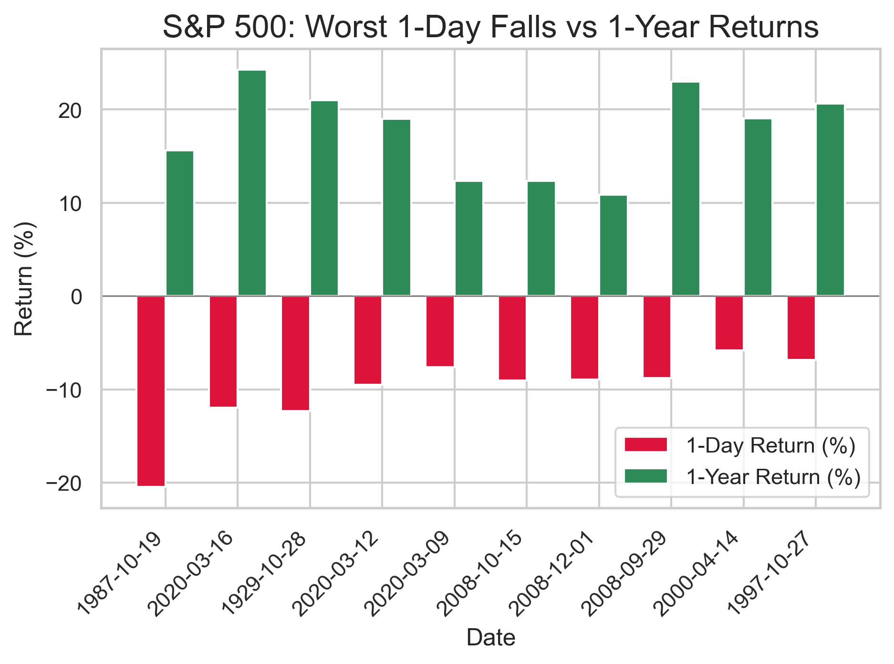
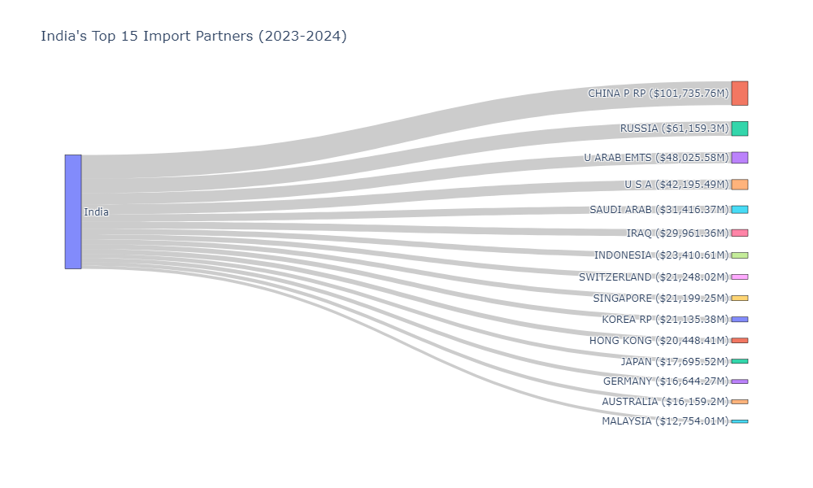

Portfolio Optimization using VBA
Built a VBA-driven Excel tool that automates portfolio optimization for any number of assets, leveraging Solver to compute efficient portfolios and visualize them alongside randomized sub-optimal alternatives.

source: google images
Simple Job Application Tracker using VBA

source: google images
Created a simple job tracking tool in Excel using VBA, featuring a userform interface to log, view, and manage job applications efficiently.
Data Cleaning Project in SQL
source: google images
Used SQL to clean and reshape employee and salary data, laying the groundwork for meaningful exploratory data analysis through structured transformations.
Moving Average Charter and Buy/Sell Signal Generator using VBA

source: google images
Developed a VBA script that generates short- and long-term moving averages for a selected asset, highlighting potential buy/sell signals to support trading decisions.
S&P 500 Falls and Rebounds throughout Time using Python

source: @Akhileshwaran
Visualized the ten steepest declines in S&P 500 history and calculated one-year post-crash returns to identify recovery patterns using Python.
Visualizing Federal Student Loan Debt using R
.png)
source: @Akhileshwaran
Analyzed historical U.S. federal student loan data and applied time-series forecasting to project debt growth over the next decade.
Highest Paid Footballers in the Top 10 using Python

source: @Akhileshwaran
Created a Python script to track the top 10 highest-paid footballers globally from 2014 to 2024, examining how long each player remained in the elite group.
Imports to India from 2023-2024 using Python

source: @Akhileshwaran
Cleaned and visualized 2023–2024 import data for India, comparing ASEAN and non-ASEAN contributions to total import volumes.